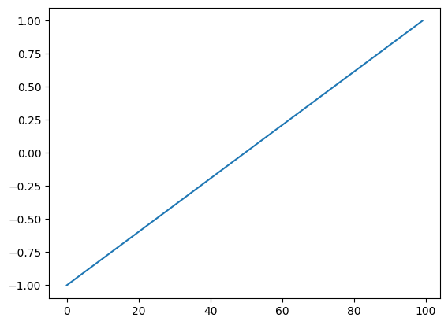

from tsai.data.external import get_UCR_dataData preprocessing
Functions used to preprocess time series (both X and y).
dsid = 'NATOPS'
X, y, splits = get_UCR_data(dsid, return_split=False)
tfms = [None, Categorize()]
dsets = TSDatasets(X, y, tfms=tfms, splits=splits)ToNumpyCategory
ToNumpyCategory (**kwargs)
Categorize a numpy batch
t = ToNumpyCategory()
y_cat = t(y)
y_cat[:10]array([3, 2, 2, 3, 2, 4, 0, 5, 2, 1])test_eq(t.decode(tensor(y_cat)), y)
test_eq(t.decode(np.array(y_cat)), y)OneHot
OneHot (n_classes=None, **kwargs)
One-hot encode/ decode a batch
oh_encoder = OneHot()
y_cat = ToNumpyCategory()(y)
oht = oh_encoder(y_cat)
oht[:10]array([[0., 0., 0., 1., 0., 0.],
[0., 0., 1., 0., 0., 0.],
[0., 0., 1., 0., 0., 0.],
[0., 0., 0., 1., 0., 0.],
[0., 0., 1., 0., 0., 0.],
[0., 0., 0., 0., 1., 0.],
[1., 0., 0., 0., 0., 0.],
[0., 0., 0., 0., 0., 1.],
[0., 0., 1., 0., 0., 0.],
[0., 1., 0., 0., 0., 0.]])n_classes = 10
n_samples = 100
t = torch.randint(0, n_classes, (n_samples,))
oh_encoder = OneHot()
oht = oh_encoder(t)
test_eq(oht.shape, (n_samples, n_classes))
test_eq(torch.argmax(oht, dim=-1), t)
test_eq(oh_encoder.decode(oht), t)n_classes = 10
n_samples = 100
a = np.random.randint(0, n_classes, (n_samples,))
oh_encoder = OneHot()
oha = oh_encoder(a)
test_eq(oha.shape, (n_samples, n_classes))
test_eq(np.argmax(oha, axis=-1), a)
test_eq(oh_encoder.decode(oha), a)TSNan2Value
TSNan2Value (value=0, median=False, by_sample_and_var=True, sel_vars=None)
Replaces any nan values by a predefined value or median
o = TSTensor(torch.randn(16, 10, 100))
o[0,0] = float('nan')
o[o > .9] = float('nan')
o[[0,1,5,8,14,15], :, -20:] = float('nan')
nan_vals1 = torch.isnan(o).sum()
o2 = Pipeline(TSNan2Value(), split_idx=0)(o.clone())
o3 = Pipeline(TSNan2Value(median=True, by_sample_and_var=True), split_idx=0)(o.clone())
o4 = Pipeline(TSNan2Value(median=True, by_sample_and_var=False), split_idx=0)(o.clone())
nan_vals2 = torch.isnan(o2).sum()
nan_vals3 = torch.isnan(o3).sum()
nan_vals4 = torch.isnan(o4).sum()
test_ne(nan_vals1, 0)
test_eq(nan_vals2, 0)
test_eq(nan_vals3, 0)
test_eq(nan_vals4, 0)o = TSTensor(torch.randn(16, 10, 100))
o[o > .9] = float('nan')
o = TSNan2Value(median=True, sel_vars=[0,1,2,3,4])(o)
test_eq(torch.isnan(o[:, [0,1,2,3,4]]).sum().item(), 0)TSStandardize
TSStandardize (mean=None, std=None, by_sample=False, by_var=False, by_step=False, exc_vars=None, eps=1e-08, use_single_batch=True, verbose=False, **kwargs)
Standardizes batch of type TSTensor
Args: - mean: you can pass a precalculated mean value as a torch tensor which is the one that will be used, or leave as None, in which case it will be estimated using a batch. - std: you can pass a precalculated std value as a torch tensor which is the one that will be used, or leave as None, in which case it will be estimated using a batch. If both mean and std values are passed when instantiating TSStandardize, the rest of arguments won’t be used. - by_sample: if True, it will calculate mean and std for each individual sample. Otherwise based on the entire batch. - by_var: * False: mean and std will be the same for all variables. * True: a mean and std will be be different for each variable. * a list of ints: (like [0,1,3]) a different mean and std will be set for each variable on the list. Variables not included in the list won’t be standardized. * a list that contains a list/lists: (like[0, [1,3]]) a different mean and std will be set for each element of the list. If multiple elements are included in a list, the same mean and std will be set for those variable in the sublist/s. (in the example a mean and std is determined for variable 0, and another one for variables 1 & 3 - the same one). Variables not included in the list won’t be standardized. - by_step: if False, it will standardize values for each time step. - exc_vars: list of variables that won’t be standardized. - eps: it avoids dividing by 0 - use_single_batch: if True a single training batch will be used to calculate mean & std. Else the entire training set will be used.
batch_tfms=[TSStandardize(by_sample=True, by_var=False, verbose=True)]
dls = TSDataLoaders.from_dsets(dsets.train, dsets.valid, bs=128, num_workers=0, batch_tfms=batch_tfms)
xb, yb = next(iter(dls.train))
test_close(xb.mean(), 0, eps=1e-1)
test_close(xb.std(), 1, eps=1e-1)exc_vars = [0, 2, 6, 8, 12]
batch_tfms=[TSStandardize(by_var=True, exc_vars=exc_vars)]
dls = TSDataLoaders.from_dsets(dsets.train, dsets.valid, bs=128, num_workers=0, batch_tfms=batch_tfms)
xb, yb = next(iter(dls.train))
test_eq(len(dls.train.after_batch.fs[0].mean.flatten()), 24)
test_eq(len(dls.train.after_batch.fs[0].std.flatten()), 24)
test_eq(dls.train.after_batch.fs[0].mean.flatten()[exc_vars], torch.zeros(len(exc_vars)))
test_eq(dls.train.after_batch.fs[0].std.flatten()[exc_vars], torch.ones(len(exc_vars)))
print(dls.train.after_batch.fs[0].mean.flatten().data)
print(dls.train.after_batch.fs[0].std.flatten().data)tensor([ 0.0000, -1.3170, 0.0000, 0.9567, -0.8527, -0.4163, 0.0000, -0.6075,
0.0000, 0.7660, -0.4960, -0.0931, 0.0000, -1.0460, -0.6201, 0.8963,
-0.7069, -0.2978, -0.5613, -1.1707, -0.7464, 0.9141, -0.7807, -0.4218])
tensor([1.0000, 0.8856, 1.0000, 0.7576, 1.1533, 0.5402, 1.0000, 0.2649, 1.0000,
0.2381, 0.4070, 0.3355, 1.0000, 0.6449, 0.2731, 0.5334, 0.8628, 0.4379,
0.5860, 0.7697, 0.3169, 0.6759, 1.0076, 0.5053])from tsai.data.validation import TimeSplitterX_nan = np.random.rand(100, 5, 10)
idxs = np.random.choice(len(X_nan), int(len(X_nan)*.5), False)
X_nan[idxs, 0] = float('nan')
idxs = np.random.choice(len(X_nan), int(len(X_nan)*.5), False)
X_nan[idxs, 1, -10:] = float('nan')
batch_tfms = TSStandardize(by_var=True)
dls = get_ts_dls(X_nan, batch_tfms=batch_tfms, splits=TimeSplitter(show_plot=False)(range_of(X_nan)))
test_eq(torch.isnan(dls.after_batch[0].mean).sum(), 0)
test_eq(torch.isnan(dls.after_batch[0].std).sum(), 0)
xb = first(dls.train)[0]
test_ne(torch.isnan(xb).sum(), 0)
test_ne(torch.isnan(xb).sum(), torch.isnan(xb).numel())
batch_tfms = [TSStandardize(by_var=True), Nan2Value()]
dls = get_ts_dls(X_nan, batch_tfms=batch_tfms, splits=TimeSplitter(show_plot=False)(range_of(X_nan)))
xb = first(dls.train)[0]
test_eq(torch.isnan(xb).sum(), 0)batch_tfms=[TSStandardize(by_sample=True, by_var=False, verbose=False)]
dls = TSDataLoaders.from_dsets(dsets.train, dsets.valid, bs=128, num_workers=0, after_batch=batch_tfms)
xb, yb = next(iter(dls.train))
test_close(xb.mean(), 0, eps=1e-1)
test_close(xb.std(), 1, eps=1e-1)
xb, yb = next(iter(dls.valid))
test_close(xb.mean(), 0, eps=1e-1)
test_close(xb.std(), 1, eps=1e-1)tfms = [None, TSClassification()]
batch_tfms = TSStandardize(by_sample=True)
dls = get_ts_dls(X, y, splits=splits, tfms=tfms, batch_tfms=batch_tfms, bs=[64, 128], inplace=True)
xb, yb = dls.train.one_batch()
test_close(xb.mean(), 0, eps=1e-1)
test_close(xb.std(), 1, eps=1e-1)
xb, yb = dls.valid.one_batch()
test_close(xb.mean(), 0, eps=1e-1)
test_close(xb.std(), 1, eps=1e-1)tfms = [None, TSClassification()]
batch_tfms = TSStandardize(by_sample=True, by_var=False, verbose=False)
dls = get_ts_dls(X, y, splits=splits, tfms=tfms, batch_tfms=batch_tfms, bs=[64, 128], inplace=False)
xb, yb = dls.train.one_batch()
test_close(xb.mean(), 0, eps=1e-1)
test_close(xb.std(), 1, eps=1e-1)
xb, yb = dls.valid.one_batch()
test_close(xb.mean(), 0, eps=1e-1)
test_close(xb.std(), 1, eps=1e-1)TSNormalize
TSNormalize (min=None, max=None, range=(-1, 1), by_sample=False, by_var=False, by_step=False, clip_values=True, use_single_batch=True, verbose=False, **kwargs)
Normalizes batch of type TSTensor
mul_max’]
Built-in mutable sequence.
If no argument is given, the constructor creates a new empty list. The argument must be an iterable if specified.
mul_min’]
Built-in mutable sequence.
If no argument is given, the constructor creates a new empty list. The argument must be an iterable if specified.
batch_tfms = [TSNormalize()]
dls = TSDataLoaders.from_dsets(dsets.train, dsets.valid, bs=128, num_workers=0, after_batch=batch_tfms)
xb, yb = next(iter(dls.train))
assert xb.max() <= 1
assert xb.min() >= -1batch_tfms=[TSNormalize(by_sample=True, by_var=False, verbose=False)]
dls = TSDataLoaders.from_dsets(dsets.train, dsets.valid, bs=128, num_workers=0, after_batch=batch_tfms)
xb, yb = next(iter(dls.train))
assert xb.max() <= 1
assert xb.min() >= -1batch_tfms = [TSNormalize(by_var=[0, [1, 2]], use_single_batch=False, clip_values=False, verbose=False)]
dls = TSDataLoaders.from_dsets(dsets.train, dsets.valid, bs=128, num_workers=0, after_batch=batch_tfms)
xb, yb = next(iter(dls.train))
assert xb[:, [0, 1, 2]].max() <= 1
assert xb[:, [0, 1, 2]].min() >= -1TSCatEncode
TSCatEncode (a, sel_var)
Encodes a variable based on a categorical array
# static input
a = np.random.randint(10, 20, 512)[:, None, None].repeat(10, 1).repeat(28, 2)
b = TSTensor(torch.randint(0, 30, (512,), device='cpu').unsqueeze(-1).unsqueeze(-1).repeat(1, 10, 28))
output = TSCatEncode(a, sel_var=0)(b)
test_eq(0 <= output[:, 0].min() <= len(np.unique(a)), True)
test_eq(0 <= output[:, 0].max() <= len(np.unique(a)), True)
test_eq(output[:, 0], output[:, 0, 0][:, None].repeat(1, 28))
output[:, 0].datatensor([[ 7, 7, 7, ..., 7, 7, 7],
[ 4, 4, 4, ..., 4, 4, 4],
[10, 10, 10, ..., 10, 10, 10],
...,
[ 0, 0, 0, ..., 0, 0, 0],
[ 7, 7, 7, ..., 7, 7, 7],
[ 5, 5, 5, ..., 5, 5, 5]])# non-static input
a = np.random.randint(10, 20, 512)[:, None, None].repeat(10, 1).repeat(28, 2)
b = TSTensor(torch.randint(0, 30, (512, 10, 28), device='cpu'))
output = TSCatEncode(a, sel_var=0)(b)
test_eq(0 <= output[:, 0].min() <= len(np.unique(a)), True)
test_eq(0 <= output[:, 0].max() <= len(np.unique(a)), True)
test_ne(output[:, 0], output[:, 0, 0][:, None].repeat(1, 28))
output[:, 0].datatensor([[1, 0, 0, ..., 0, 0, 0],
[0, 0, 0, ..., 0, 0, 0],
[0, 0, 0, ..., 8, 0, 2],
...,
[0, 0, 0, ..., 0, 0, 0],
[0, 0, 0, ..., 0, 0, 0],
[0, 0, 0, ..., 0, 0, 7]])TSDropFeatByKey
TSDropFeatByKey (key_var, p, sel_vars, sel_steps=None, **kwargs)
Randomly drops selected features at selected steps based with a given probability per feature, step and a key variable
| Type | Default | Details | |
|---|---|---|---|
| key_var | int representing the variable that contains the key information | ||
| p | array of shape (n_keys, n_features, n_steps) representing the probabilities of dropping a feature at a given step for a given key | ||
| sel_vars | int or slice or list of ints or array of ints representing the variables to drop | ||
| sel_steps | NoneType | None | int or slice or list of ints or array of ints representing the steps to drop |
| kwargs |
n_devices = 4
key_var = 0
for sel_vars in [1, [1], [1,3,5], slice(3, 5)]:
for sel_steps in [None, -1, 27, [27], [25, 26], slice(10, 20)]:
o = TSTensor(torch.rand(512, 10, 28))
o[:, key_var] = torch.randint(0, n_devices, (512, 28))
n_vars = 1 if isinstance(sel_vars, Integral) else len(sel_vars) if isinstance(sel_vars, list) else sel_vars.stop - sel_vars.start
n_steps = o.shape[-1] if sel_steps is None else 1 if isinstance(sel_steps, Integral) else \
len(sel_steps) if isinstance(sel_steps, list) else sel_steps.stop - sel_steps.start
p = torch.rand(n_devices, n_vars, n_steps) * .5 + .5
output = TSDropFeatByKey(key_var, p, sel_vars, sel_steps)(o)
assert torch.isnan(output).sum((0, 2))[sel_vars].sum() > 0
assert torch.isnan(output).sum((0, 2))[~np.array(np.arange(o.shape[1])[sel_vars])].sum() == 0TSClipOutliers
TSClipOutliers (min=None, max=None, by_sample=False, by_var=False, use_single_batch=False, verbose=False, **kwargs)
Clip outliers batch of type TSTensor based on the IQR
batch_tfms=[TSClipOutliers(-1, 1, verbose=True)]
dls = TSDataLoaders.from_dsets(dsets.train, dsets.valid, bs=128, num_workers=0, after_batch=batch_tfms)
xb, yb = next(iter(dls.train))
assert xb.max() <= 1
assert xb.min() >= -1
test_close(xb.min(), -1, eps=1e-1)
test_close(xb.max(), 1, eps=1e-1)
xb, yb = next(iter(dls.valid))
test_close(xb.min(), -1, eps=1e-1)
test_close(xb.max(), 1, eps=1e-1)TSClipOutliers min=-1, max=1
TSClip
TSClip (min=-6, max=6, **kwargs)
Clip batch of type TSTensor
t = TSTensor(torch.randn(10, 20, 100)*10)
test_le(TSClip()(t).max().item(), 6)
test_ge(TSClip()(t).min().item(), -6)TSSelfMissingness
TSSelfMissingness (sel_vars=None, **kwargs)
Applies missingness from samples in a batch to random samples in the batch for selected variables
t = TSTensor(torch.randn(10, 20, 100))
t[t>.8] = np.nan
t2 = TSSelfMissingness()(t.clone())
t3 = TSSelfMissingness(sel_vars=[0,3,5,7])(t.clone())
assert (torch.isnan(t).sum() < torch.isnan(t2).sum()) and (torch.isnan(t2).sum() > torch.isnan(t3).sum())TSRobustScale
TSRobustScale (median=None, iqr=None, quantile_range=(25.0, 75.0), use_single_batch=True, exc_vars=None, eps=1e-08, verbose=False, **kwargs)
This Scaler removes the median and scales the data according to the quantile range (defaults to IQR: Interquartile Range)
batch_tfms = TSRobustScale(verbose=True, use_single_batch=False)
dls = TSDataLoaders.from_dsets(dsets.train, dsets.valid, batch_tfms=batch_tfms, num_workers=0)
xb, yb = next(iter(dls.train))
xb.min()TSRobustScale median=torch.Size([1, 24, 1]) iqr=torch.Size([1, 24, 1])TSTensor([-2.3502116203308105], device=cpu, dtype=torch.float32)exc_vars = [0, 2, 6, 8, 12]
batch_tfms = TSRobustScale(use_single_batch=False, exc_vars=exc_vars)
dls = TSDataLoaders.from_dsets(dsets.train, dsets.valid, batch_tfms=batch_tfms, num_workers=0)
xb, yb = next(iter(dls.train))
test_eq(len(dls.train.after_batch.fs[0].median.flatten()), 24)
test_eq(len(dls.train.after_batch.fs[0].iqr.flatten()), 24)
test_eq(dls.train.after_batch.fs[0].median.flatten()[exc_vars], torch.zeros(len(exc_vars)))
test_eq(dls.train.after_batch.fs[0].iqr.flatten()[exc_vars], torch.ones(len(exc_vars)))
print(dls.train.after_batch.fs[0].median.flatten().data)
print(dls.train.after_batch.fs[0].iqr.flatten().data)tensor([ 0.0000, -1.7305, 0.0000, 0.7365, -1.2736, -0.5528, 0.0000, -0.7074,
0.0000, 0.7087, -0.7014, -0.1120, 0.0000, -1.3332, -0.5958, 0.7563,
-1.0129, -0.3985, -0.5186, -1.5125, -0.7353, 0.7326, -1.1495, -0.5359])
tensor([1.0000, 4.2788, 1.0000, 4.8008, 8.0682, 2.2777, 1.0000, 0.6955, 1.0000,
1.4875, 2.6386, 1.4756, 1.0000, 2.9811, 1.2507, 3.2291, 5.9906, 1.9098,
1.3428, 3.6368, 1.3689, 4.4213, 6.9907, 2.1939])TSGaussianStandardize
TSGaussianStandardize (E_mean:np.ndarray, S_mean:np.ndarray, E_std:np.ndarray, S_std:np.ndarray, eps=1e-08, split_idx=0, **kwargs)
Scales each batch using modeled mean and std based on UNCERTAINTY MODELING FOR OUT-OF-DISTRIBUTION GENERALIZATION https://arxiv.org/abs/2202.03958
| Type | Default | Details | |
|---|---|---|---|
| E_mean | np.ndarray | Mean expected value | |
| S_mean | np.ndarray | Uncertainty (standard deviation) of the mean | |
| E_std | np.ndarray | Standard deviation expected value | |
| S_std | np.ndarray | Uncertainty (standard deviation) of the standard deviation | |
| eps | float | 1e-08 | (epsilon) small amount added to standard deviation to avoid deviding by zero |
| split_idx | int | 0 | Flag to indicate to which set is this transofrm applied. 0: training, 1:validation, None:both |
| kwargs |
get_random_stats
get_random_stats (E_mean, S_mean, E_std, S_std)
get_stats_with_uncertainty
get_stats_with_uncertainty (o, sel_vars=None, sel_vars_zero_mean_unit_var=False, bs=64, n_trials=None, axis=(0, 2))
arr = np.random.rand(1000, 2, 50)
E_mean, S_mean, E_std, S_std = get_stats_with_uncertainty(arr, sel_vars=None, bs=64, n_trials=None, axis=(0,2))
new_mean, new_std = get_random_stats(E_mean, S_mean, E_std, S_std)
new_mean2, new_std2 = get_random_stats(E_mean, S_mean, E_std, S_std)
test_ne(new_mean, new_mean2)
test_ne(new_std, new_std2)
test_eq(new_mean.shape, (1, 2, 1))
test_eq(new_std.shape, (1, 2, 1))
new_mean, new_std
100.00% [15/15 00:00<00:00]
(array([[[0.50218356],
[0.50377834]]]),
array([[[0.28790575],
[0.28940667]]]))TSGaussianStandardize can be used jointly with TSStandardized in the following way:
X, y, splits = get_UCR_data('LSST', split_data=False)
tfms = [None, TSClassification()]
E_mean, S_mean, E_std, S_std = get_stats_with_uncertainty(X, sel_vars=None, bs=64, n_trials=None, axis=(0,2))
batch_tfms = [TSGaussianStandardize(E_mean, S_mean, E_std, S_std, split_idx=0), TSStandardize(E_mean, S_mean, split_idx=1)]
dls = get_ts_dls(X, y, splits=splits, tfms=tfms, batch_tfms=batch_tfms, bs=[32, 64])
learn = ts_learner(dls, InceptionTimePlus, metrics=accuracy, cbs=[ShowGraph()])
learn.fit_one_cycle(1, 1e-2)In this way the train batches are scaled based on mean and standard deviation distributions while the valid batches are scaled with a fixed mean and standard deviation values.
The intent is to improve out-of-distribution performance. This method is inspired by UNCERTAINTY MODELING FOR OUT-OF-DISTRIBUTION GENERALIZATION https://arxiv.org/abs/2202.03958.
TSDiff
TSDiff (lag=1, pad=True, **kwargs)
Differences batch of type TSTensor
t = TSTensor(torch.arange(24).reshape(2,3,4))
test_eq(TSDiff()(t)[..., 1:].float().mean(), 1)
test_eq(TSDiff(lag=2, pad=False)(t).float().mean(), 2)TSLog
TSLog (ex=None, **kwargs)
Log transforms batch of type TSTensor + 1. Accepts positive and negative numbers
t = TSTensor(torch.rand(2,3,4)) * 2 - 1
tfm = TSLog()
enc_t = tfm(t)
test_ne(enc_t, t)
test_close(tfm.decodes(enc_t).data, t.data)TSCyclicalPosition
TSCyclicalPosition (cyclical_var=None, magnitude=None, drop_var=False, **kwargs)
Concatenates the position along the sequence as 2 additional variables (sine and cosine)
| Type | Default | Details | |
|---|---|---|---|
| cyclical_var | NoneType | None | Optional variable to indicate the steps withing the cycle (ie minute of the day) |
| magnitude | NoneType | None | Added for compatibility. It’s not used. |
| drop_var | bool | False | Flag to indicate if the cyclical var is removed |
| kwargs |
bs, c_in, seq_len = 1,3,100
t = TSTensor(torch.rand(bs, c_in, seq_len))
enc_t = TSCyclicalPosition()(t)
test_ne(enc_t, t)
assert t.shape[1] == enc_t.shape[1] - 2
plt.plot(enc_t[0, -2:].cpu().numpy().T)
plt.show()
bs, c_in, seq_len = 1,3,100
t1 = torch.rand(bs, c_in, seq_len)
t2 = torch.arange(seq_len)
t2 = torch.cat([t2[35:], t2[:35]]).reshape(1, 1, -1)
t = TSTensor(torch.cat([t1, t2], 1))
mask = torch.rand_like(t) > .8
t[mask] = np.nan
enc_t = TSCyclicalPosition(3)(t)
test_ne(enc_t, t)
assert t.shape[1] == enc_t.shape[1] - 2
plt.plot(enc_t[0, -2:].cpu().numpy().T)
plt.show()TSLinearPosition
TSLinearPosition (linear_var:int=None, var_range:tuple=None, magnitude=None, drop_var:bool=False, lin_range:tuple=(-1, 1), **kwargs)
Concatenates the position along the sequence as 1 additional variable
| Type | Default | Details | |
|---|---|---|---|
| linear_var | int | None | Optional variable to indicate the steps withing the cycle (ie minute of the day) |
| var_range | tuple | None | Optional range indicating min and max values of the linear variable |
| magnitude | NoneType | None | Added for compatibility. It’s not used. |
| drop_var | bool | False | Flag to indicate if the cyclical var is removed |
| lin_range | tuple | (-1, 1) | |
| kwargs |
bs, c_in, seq_len = 1,3,100
t = TSTensor(torch.rand(bs, c_in, seq_len))
enc_t = TSLinearPosition()(t)
test_ne(enc_t, t)
assert t.shape[1] == enc_t.shape[1] - 1
plt.plot(enc_t[0, -1].cpu().numpy().T)
plt.show()
t = torch.arange(100)
t1 = torch.cat([t[30:], t[:30]]).reshape(1, 1, -1)
t2 = torch.cat([t[52:], t[:52]]).reshape(1, 1, -1)
t = torch.cat([t1, t2]).float()
mask = torch.rand_like(t) > .8
t[mask] = np.nan
t = TSTensor(t)
enc_t = TSLinearPosition(linear_var=0, var_range=(0, 100), drop_var=True)(t)
test_ne(enc_t, t)
assert t.shape[1] == enc_t.shape[1]
plt.plot(enc_t[0, -1].cpu().numpy().T)
plt.show()TSMissingness
TSMissingness (sel_vars=None, feature_idxs=None, magnitude=None, **kwargs)
Concatenates data missingness for selected features along the sequence as additional variables
bs, c_in, seq_len = 1,3,100
t = TSTensor(torch.rand(bs, c_in, seq_len))
t[t>.5] = np.nan
enc_t = TSMissingness(sel_vars=[0,2])(t)
test_eq(enc_t.shape[1], 5)
test_eq(enc_t[:, 3:], torch.isnan(t[:, [0,2]]).float())TSPositionGaps
TSPositionGaps (sel_vars=None, feature_idxs=None, magnitude=None, forward=True, backward=False, nearest=False, normalize=True, **kwargs)
Concatenates gaps for selected features along the sequence as additional variables
bs, c_in, seq_len = 1,3,8
t = TSTensor(torch.rand(bs, c_in, seq_len))
t[t>.5] = np.nan
enc_t = TSPositionGaps(sel_vars=[0,2], forward=True, backward=True, nearest=True, normalize=False)(t)
test_eq(enc_t.shape[1], 9)
enc_t.datatensor([[[ nan, nan, nan, nan, 0.1002, nan, 0.0067, nan],
[ nan, 0.1946, 0.2883, 0.3187, 0.4339, nan, 0.4647, 0.3606],
[0.3654, 0.1780, 0.1146, 0.2576, nan, nan, nan, nan],
[1.0000, 2.0000, 3.0000, 4.0000, 5.0000, 1.0000, 2.0000, 1.0000],
[1.0000, 1.0000, 1.0000, 1.0000, 1.0000, 2.0000, 3.0000, 4.0000],
[4.0000, 3.0000, 2.0000, 1.0000, 2.0000, 1.0000, 2.0000, 1.0000],
[1.0000, 1.0000, 1.0000, 5.0000, 4.0000, 3.0000, 2.0000, 1.0000],
[1.0000, 2.0000, 2.0000, 1.0000, 2.0000, 1.0000, 2.0000, 1.0000],
[1.0000, 1.0000, 1.0000, 1.0000, 1.0000, 2.0000, 2.0000, 1.0000]]])TSRollingMean
TSRollingMean (sel_vars=None, feature_idxs=None, magnitude=None, window=2, replace=False, **kwargs)
Calculates the rolling mean for all/ selected features alongside the sequence
It replaces the original values or adds additional variables (default) If nan values are found, they will be filled forward and backward
bs, c_in, seq_len = 1,3,8
t = TSTensor(torch.rand(bs, c_in, seq_len))
t[t > .6] = np.nan
print(t.data)
enc_t = TSRollingMean(sel_vars=[0,2], window=3)(t)
test_eq(enc_t.shape[1], 5)
print(enc_t.data)
enc_t = TSRollingMean(window=3, replace=True)(t)
test_eq(enc_t.shape[1], 3)
print(enc_t.data)tensor([[[0.1395, nan, nan, nan, 0.2549, 0.4154, 0.0995, nan],
[ nan, 0.0991, 0.2952, nan, 0.1058, nan, 0.5181, 0.3817],
[0.4504, 0.2515, 0.0548, nan, nan, nan, nan, 0.5683]]])
tensor([[[0.1395, 0.1395, 0.1395, 0.1395, 0.2549, 0.4154, 0.0995, 0.0995],
[ nan, 0.0991, 0.2952, nan, 0.1058, nan, 0.5181, 0.3817],
[0.4504, 0.2515, 0.0548, 0.0548, 0.0548, 0.0548, 0.0548, 0.5683],
[0.1395, 0.1395, 0.1395, 0.1395, 0.1780, 0.2699, 0.2566, 0.2048],
[0.4504, 0.3509, 0.2522, 0.1204, 0.0548, 0.0548, 0.0548, 0.2260]]])
tensor([[[0.1395, 0.1395, 0.1395, 0.1395, 0.1780, 0.2699, 0.2566, 0.2048],
[0.0991, 0.0991, 0.1645, 0.2299, 0.2321, 0.1689, 0.2432, 0.3352],
[0.4504, 0.3509, 0.2522, 0.1204, 0.0548, 0.0548, 0.0548, 0.2260]]])TSLogReturn
TSLogReturn (lag=1, pad=True, **kwargs)
Calculates log-return of batch of type TSTensor. For positive values only
t = TSTensor([1,2,4,8,16,32,64,128,256]).float()
test_eq(TSLogReturn(pad=False)(t).std(), 0)TSAdd
TSAdd (add, **kwargs)
Add a defined amount to each batch of type TSTensor.
t = TSTensor([1,2,3]).float()
test_eq(TSAdd(1)(t), TSTensor([2,3,4]).float())TSClipByVar
TSClipByVar (var_min_max, **kwargs)
Clip batch of type TSTensor by variable
Args: var_min_max: list of tuples containing variable index, min value (or None) and max value (or None)
t = TSTensor(torch.rand(16, 3, 10) * tensor([1,10,100]).reshape(1,-1,1))
max_values = t.max(0).values.max(-1).values.data
max_values2 = TSClipByVar([(1,None,5), (2,10,50)])(t).max(0).values.max(-1).values.data
test_le(max_values2[1], 5)
test_ge(max_values2[2], 10)
test_le(max_values2[2], 50)TSDropVars
TSDropVars (drop_vars, **kwargs)
Drops selected variable from the input
t = TSTensor(torch.arange(24).reshape(2, 3, 4))
enc_t = TSDropVars(2)(t)
test_ne(t, enc_t)
enc_t.datatensor([[[ 0, 1, 2, 3],
[ 4, 5, 6, 7]],
[[12, 13, 14, 15],
[16, 17, 18, 19]]])TSOneHotEncode
TSOneHotEncode (sel_var:int, unique_labels:list, add_na:bool=False, drop_var:bool=True, magnitude=None, **kwargs)
Delegates (__call__,decode,setup) to (encodes,decodes,setups) if split_idx matches
| Type | Default | Details | |
|---|---|---|---|
| sel_var | int | Variable that is one-hot encoded | |
| unique_labels | list | List containing all labels (excluding nan values) | |
| add_na | bool | False | Flag to indicate if values not included in vocab should be set as 0 |
| drop_var | bool | True | Flag to indicate if the selected var is removed |
| magnitude | NoneType | None | Added for compatibility. It’s not used. |
| kwargs |
bs = 2
seq_len = 5
t_cont = torch.rand(bs, 1, seq_len)
t_cat = torch.randint(0, 3, t_cont.shape)
t = TSTensor(torch.cat([t_cat, t_cont], 1))
t_cattensor([[[2, 0, 0, 2, 1]],
[[2, 0, 0, 1, 0]]])tfm = TSOneHotEncode(0, [0, 1, 2])
output = tfm(t)[:, -3:].data
test_eq(t_cat, torch.argmax(tfm(t)[:, -3:], 1)[:, None])
tfm(t)[:, -3:].datatensor([[[0., 1., 1., 0., 0.],
[0., 0., 0., 0., 1.],
[1., 0., 0., 1., 0.]],
[[0., 1., 1., 0., 1.],
[0., 0., 0., 1., 0.],
[1., 0., 0., 0., 0.]]])bs = 2
seq_len = 5
t_cont = torch.rand(bs, 1, seq_len)
t_cat = torch.tensor([[10., 5., 11., np.nan, 12.], [ 5., 12., 10., np.nan, 11.]])[:, None]
t = TSTensor(torch.cat([t_cat, t_cont], 1))
t_cattensor([[[10., 5., 11., nan, 12.]],
[[ 5., 12., 10., nan, 11.]]])tfm = TSOneHotEncode(0, [10, 11, 12], drop_var=False)
mask = ~torch.isnan(t[:, 0])
test_eq(tfm(t)[:, 0][mask], t[:, 0][mask])
tfm(t)[:, -3:].datatensor([[[1., 0., 0., 0., 0.],
[0., 0., 1., 0., 0.],
[0., 0., 0., 0., 1.]],
[[0., 0., 1., 0., 0.],
[0., 0., 0., 0., 1.],
[0., 1., 0., 0., 0.]]])t1 = torch.randint(3, 7, (2, 1, 10))
t2 = torch.rand(2, 1, 10)
t = TSTensor(torch.cat([t1, t2], 1))
output = TSOneHotEncode(0, [3, 4, 5], add_na=True, drop_var=True)(t)
test_eq((t1 > 5).float(), output.data[:, [1]])
test_eq((t1 == 3).float(), output.data[:, [2]])
test_eq((t1 == 4).float(), output.data[:, [3]])
test_eq((t1 == 5).float(), output.data[:, [4]])
test_eq(output.shape, (t.shape[0], 5, t.shape[-1]))TSPosition
TSPosition (steps:list, magnitude=None, **kwargs)
Delegates (__call__,decode,setup) to (encodes,decodes,setups) if split_idx matches
| Type | Default | Details | |
|---|---|---|---|
| steps | list | List containing the steps passed as an additional variable. Theu should be normalized. | |
| magnitude | NoneType | None | Added for compatibility. It’s not used. |
| kwargs |
t = TSTensor(torch.rand(2, 1, 10)).float()
a = np.linspace(-1, 1, 10).astype('float64')
TSPosition(a)(t).data.dtype, t.dtype(torch.float32, torch.float32)sklearn API transforms
TSShrinkDataFrame
TSShrinkDataFrame (columns=None, skip=[], obj2cat=True, int2uint=False, verbose=True)
Base class for all estimators in scikit-learn.
df = pd.DataFrame()
df["ints64"] = np.random.randint(0,3,10)
df['floats64'] = np.random.rand(10)
tfm = TSShrinkDataFrame()
tfm.fit(df)
df = tfm.transform(df)
test_eq(df["ints64"].dtype, "int8")
test_eq(df["floats64"].dtype, "float32")Memory usage of dataframe is 0.000274658203125 MB
Memory usage of dataframe after reduction 0.0001697540283203125 MB
Reduced by 38.19444444444444 % TSOneHotEncoder
TSOneHotEncoder (columns=None, drop=True, add_na=True, dtype=<class 'numpy.int64'>)
Base class for all estimators in scikit-learn.
df = pd.DataFrame()
df["a"] = np.random.randint(0,2,10)
df["b"] = np.random.randint(0,3,10)
unique_cols = len(df["a"].unique()) + len(df["b"].unique())
tfm = TSOneHotEncoder()
tfm.fit(df)
df = tfm.transform(df)
test_eq(df.shape[1], unique_cols)TSCategoricalEncoder
TSCategoricalEncoder (columns=None, add_na=True, prefix=None, suffix=None, verbose=True)
Base class for all estimators in scikit-learn.
Stateful transforms like TSCategoricalEncoder can easily be serialized.
import joblibdf = pd.DataFrame()
df["a"] = alphabet[np.random.randint(0,2,100)]
df["b"] = ALPHABET[np.random.randint(0,3,100)]
a_unique = len(df["a"].unique())
b_unique = len(df["b"].unique())
tfm = TSCategoricalEncoder()
tfm.fit(df)
joblib.dump(tfm, "data/TSCategoricalEncoder.joblib")
tfm = joblib.load("data/TSCategoricalEncoder.joblib")
df = tfm.transform(df)
test_eq(df['a'].max(), a_unique)
test_eq(df['b'].max(), b_unique)encoding a...
...a encoded
encoding b...
...b encodedTSDateTimeEncoder
TSDateTimeEncoder (datetime_columns=None, prefix=None, drop=True, time=False, attr=['Year', 'Month', 'Week', 'Day', 'Dayofweek', 'Dayofyear', 'Is_month_end', 'Is_month_start', 'Is_quarter_end', 'Is_quarter_start', 'Is_year_end', 'Is_year_start'])
Base class for all estimators in scikit-learn.
import datetimedf = pd.DataFrame()
df.loc[0, "date"] = datetime.datetime.now()
df.loc[1, "date"] = datetime.datetime.now() + pd.Timedelta(1, unit="D")
tfm = TSDateTimeEncoder()
joblib.dump(tfm, "data/TSDateTimeEncoder.joblib")
tfm = joblib.load("data/TSDateTimeEncoder.joblib")
tfm.fit_transform(df)| _Year | _Month | _Week | _Day | _Dayofweek | _Dayofyear | _Is_month_end | _Is_month_start | _Is_quarter_end | _Is_quarter_start | _Is_year_end | _Is_year_start | |
|---|---|---|---|---|---|---|---|---|---|---|---|---|
| 0 | 2022 | 12 | 50 | 16 | 4 | 350 | False | False | False | False | False | False |
| 1 | 2022 | 12 | 50 | 17 | 5 | 351 | False | False | False | False | False | False |
TSMissingnessEncoder
TSMissingnessEncoder (columns=None)
Base class for all estimators in scikit-learn.
data = np.random.rand(10,3)
data[data > .8] = np.nan
df = pd.DataFrame(data, columns=["a", "b", "c"])
tfm = TSMissingnessEncoder()
tfm.fit(df)
joblib.dump(tfm, "data/TSMissingnessEncoder.joblib")
tfm = joblib.load("data/TSMissingnessEncoder.joblib")
df = tfm.transform(df)
df| a | b | c | a_missing | b_missing | c_missing | |
|---|---|---|---|---|---|---|
| 0 | NaN | NaN | 0.214431 | 1 | 1 | 0 |
| 1 | 0.377148 | 0.189471 | 0.579457 | 0 | 0 | 0 |
| 2 | 0.098363 | NaN | 0.203242 | 0 | 1 | 0 |
| 3 | NaN | 0.052139 | 0.653996 | 1 | 0 | 0 |
| 4 | 0.091636 | NaN | 0.681170 | 0 | 1 | 0 |
| 5 | 0.665159 | 0.074841 | 0.023606 | 0 | 0 | 0 |
| 6 | 0.674338 | 0.726029 | 0.122438 | 0 | 0 | 0 |
| 7 | 0.699077 | 0.672016 | 0.086151 | 0 | 0 | 0 |
| 8 | 0.071617 | 0.773986 | NaN | 0 | 0 | 1 |
| 9 | 0.593852 | 0.664601 | NaN | 0 | 0 | 1 |
y transforms
Preprocessor
Preprocessor (preprocessor, **kwargs)
Initialize self. See help(type(self)) for accurate signature.
# Standardize
from tsai.data.validation import TimeSplittery = random_shuffle(np.random.randn(1000) * 10 + 5)
splits = TimeSplitter()(y)
preprocessor = Preprocessor(StandardScaler)
preprocessor.fit(y[splits[0]])
y_tfm = preprocessor.transform(y)
test_close(preprocessor.inverse_transform(y_tfm), y)
plt.hist(y, 50, label='ori',)
plt.hist(y_tfm, 50, label='tfm')
plt.legend(loc='best')
plt.show()# RobustScaler
y = random_shuffle(np.random.randn(1000) * 10 + 5)
splits = TimeSplitter()(y)
preprocessor = Preprocessor(RobustScaler)
preprocessor.fit(y[splits[0]])
y_tfm = preprocessor.transform(y)
test_close(preprocessor.inverse_transform(y_tfm), y)
plt.hist(y, 50, label='ori',)
plt.hist(y_tfm, 50, label='tfm')
plt.legend(loc='best')
plt.show()
# Normalize
y = random_shuffle(np.random.rand(1000) * 3 + .5)
splits = TimeSplitter()(y)
preprocessor = Preprocessor(Normalizer)
preprocessor.fit(y[splits[0]])
y_tfm = preprocessor.transform(y)
test_close(preprocessor.inverse_transform(y_tfm), y)
plt.hist(y, 50, label='ori',)
plt.hist(y_tfm, 50, label='tfm')
plt.legend(loc='best')
plt.show()
# BoxCox
y = random_shuffle(np.random.rand(1000) * 10 + 5)
splits = TimeSplitter()(y)
preprocessor = Preprocessor(BoxCox)
preprocessor.fit(y[splits[0]])
y_tfm = preprocessor.transform(y)
test_close(preprocessor.inverse_transform(y_tfm), y)
plt.hist(y, 50, label='ori',)
plt.hist(y_tfm, 50, label='tfm')
plt.legend(loc='best')
plt.show()
# YeoJohnshon
y = random_shuffle(np.random.randn(1000) * 10 + 5)
y = np.random.beta(.5, .5, size=1000)
splits = TimeSplitter()(y)
preprocessor = Preprocessor(YeoJohnshon)
preprocessor.fit(y[splits[0]])
y_tfm = preprocessor.transform(y)
test_close(preprocessor.inverse_transform(y_tfm), y)
plt.hist(y, 50, label='ori',)
plt.hist(y_tfm, 50, label='tfm')
plt.legend(loc='best')
plt.show()
# QuantileTransformer
y = - np.random.beta(1, .5, 10000) * 10
splits = TimeSplitter()(y)
preprocessor = Preprocessor(Quantile)
preprocessor.fit(y[splits[0]])
plt.hist(y, 50, label='ori',)
y_tfm = preprocessor.transform(y)
plt.legend(loc='best')
plt.show()
plt.hist(y_tfm, 50, label='tfm')
plt.legend(loc='best')
plt.show()
test_close(preprocessor.inverse_transform(y_tfm), y, 1e-1)ReLabeler
ReLabeler (cm)
Changes the labels in a dataset based on a dictionary (class mapping) Args: cm = class mapping dictionary
vals = {0:'a', 1:'b', 2:'c', 3:'d', 4:'e'}
y = np.array([vals[i] for i in np.random.randint(0, 5, 20)])
labeler = ReLabeler(dict(a='x', b='x', c='y', d='z', e='z'))
y_new = labeler(y)
test_eq(y.shape, y_new.shape)
y, y_new(array(['d', 'c', 'c', 'c', 'd', 'b', 'a', 'a', 'e', 'a', 'b', 'd', 'e',
'e', 'e', 'd', 'a', 'c', 'c', 'e'], dtype='<U1'),
array(['z', 'y', 'y', 'y', 'z', 'x', 'x', 'x', 'z', 'x', 'x', 'z', 'z',
'z', 'z', 'z', 'x', 'y', 'y', 'z'], dtype='<U1'))